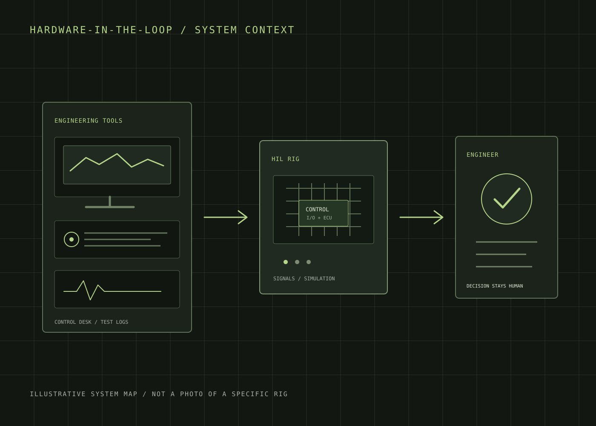

Illustrative HIL system mapAn extra mind for engineering.
An AI assistant concept for Hardware-in-the-Loop support. It collects symptoms, versions and logs, then guides diagnosis or escalates to an engineer.
- Context
- HIL support at Volvo
- Scope
- Engineering Tool, dSPACE ControlDesk, ATI Vision, Python / Robot Framework
- Stack
- Prompt engineering, Generative AI